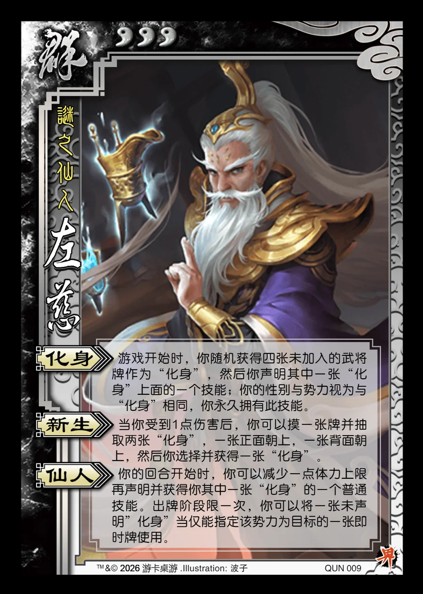

点击卡面查看大图
群
界左慈
♥3谜之仙人
化身
游戏开始时，你随机获得四张未加入的武将牌作为“化身”，然后你声明其中一张“化身”上面的一个技能；你的性别与势力视为与“化身”相同，你永久拥有此技能。
新生
当你受到1点伤害后，你可以摸一张牌并抽取两张“化身”，一张正面朝上，一张背面朝上，然后你选择并获得一张“化身”。
仙人
你的回合开始时，你可以减少一点体力上限再声明并获得你其中一张“化身”的一个普通技能。出牌阶段限一次，你可以将一张未声明”化身”当仅能指定该势力为目标的一张即时牌使用。